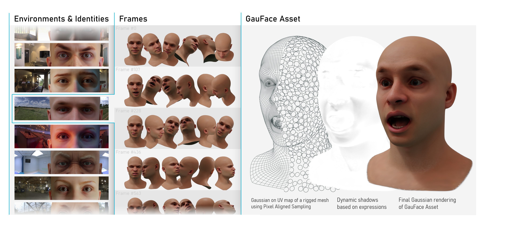

GauFace Representation & Dataset
Left We collect 143 facial assets under 134 lighting conditions, with a total of 1,023 combinations. Middle For each combination, we render 1,071 frames under 153 different expressions with random camera positions. Right Our GauFace asset defines the center of Gaussians on the UV map consistent across different identities and introduces dynamic shadow vectors to disentangle the deformation-dependent and deformation-agnostic shading effects.